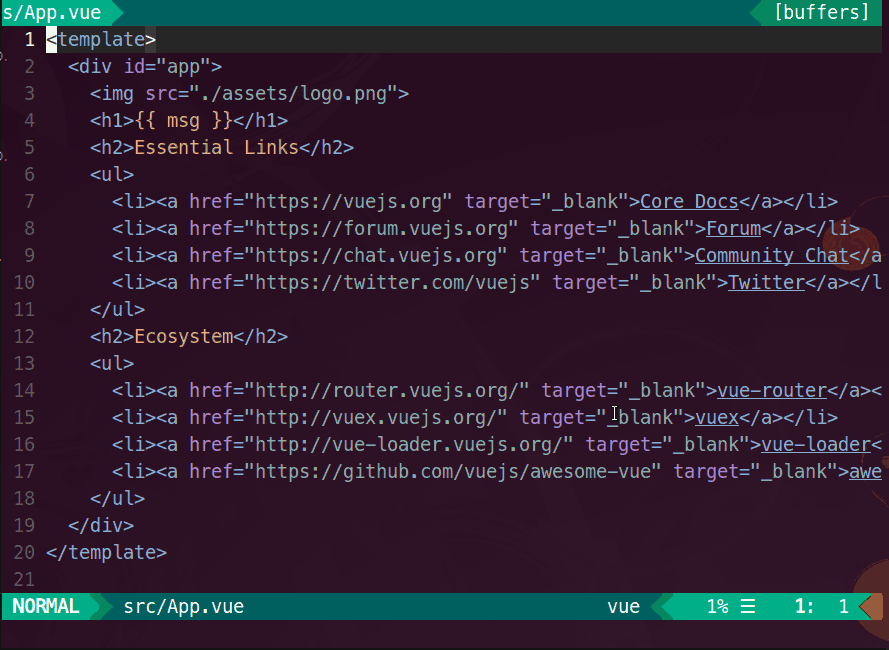
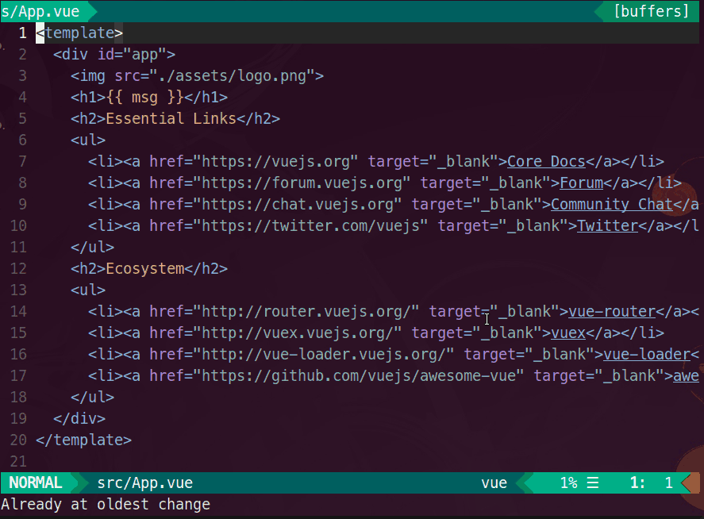
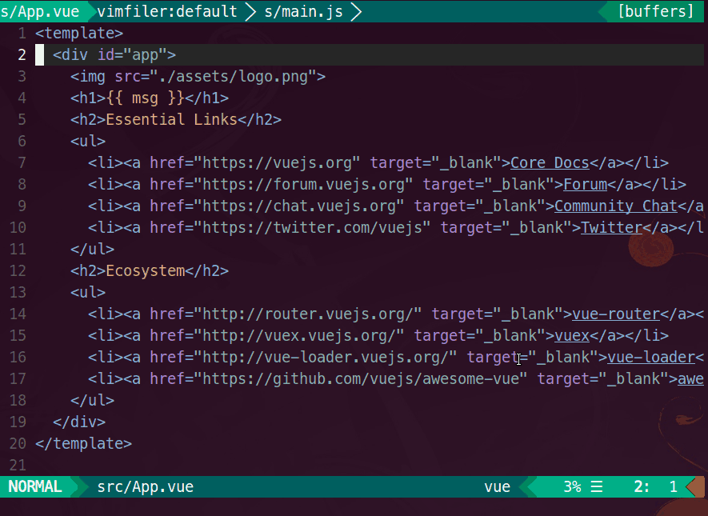

VimでLanguage Serverを活用する(Rust, Vue.js)で中途半端にしていたVue.js開発がほぼ完成したのでまとめます。

これでVSCode+Veturと同等にVue.js開発ができます。
LanguageClient-neovim
autozimu/LanguageClient-neovim
LSPのクライアントにはこれを使います。 最近ずっと更新を追っていますが去年の12月にPythonからRust化しています。 そこからはnextブランチで活発に開発(2,3日でリリース)が進んでいます。 なので割と不安定でupdateするとうまく動かなかったりします。が次のバージョンで治ることが多いので2,3日待つと良いです。
(20180117現在最新ではうまく動かなくてv0.1.27 7d0a5ccを使っています。vim-plugなら'commit': '7d0a5cc', dein.vimなら'rev': '7d0a5cc'を指定しています。)
Rustで生成されたバイナリはCIで回しているdocker上で生成されていてそれぞれの環境用のバイナリがtagに追加される仕組みになっています。 install.shでそれぞれの環境にあったバイナリがインストールされる仕組みになっています。 今日もTravis CIが遅いからかCircle CIを使うようにしていたりしていて開発は活発です。
特徴は以下の通り
- LSPの仕様網羅
- ALEによるLintサポート
- deoplete.nvim or nvim-completion-managerによる補完
- Vim8サポート(vim-hug-neovim-rpcを利用)
最小構成
この最小構成は割と汎用的でLSPの部分と各言語用のプラグイン部分を置き換えれば他のLanguage Serverを持つ言語の開発にも使えます。
vim-plug
vim-plug自体のインストール方法はREADMEにあります。
call plug#begin('~/.vim/plugged')
Plug 'autozimu/LanguageClient-neovim', {
\ 'branch': 'next',
\ 'do': 'bash install.sh',
\ }
Plug 'Shougo/deoplete.nvim', { 'do': ':UpdateRemotePlugins' }
Plug 'w0rp/ale'
Plug 'posva/vim-vue'
call plug#end()
" for deoplete.nvim
let g:deoplete#enable_at_startup = 1
" for LanguageClient-neovim
set hidden
let g:LanguageClient_serverCommands = {
\ 'vue': ['vls'],
\ }
" not stop completion $ & /
setlocal iskeyword+=$
setlocal iskeyword+=-
dein.vim
こちらもREADMEにインストール方法が書いてあります。 installer.shの引数に、'~/.vim/bundle'を指定しています。
if &compatible
set nocompatible
endif
set runtimepath+=~/.vim/bundle/repos/github.com/Shougo/dein.vim
if dein#load_state('~/.vim/bundle')
call dein#begin('~/.vim/bundle')
call dein#add('~/.vim/bundle/repos/github.com/Shougo/dein.vim')
call dein#add('autozimu/LanguageClient-neovim', {
\ 'rev': 'next',
\ 'build': 'bash install.sh',
\ })
call dein#add('Shougo/deoplete.nvim')
call dein#add('w0rp/ale')
call dein#add('posva/vim-vue')
call dein#end()
call dein#save_state()
endif
filetype plugin indent on
syntax enable
" for deoplete.nvim
let g:deoplete#enable_at_startup = 1
" for LanguageClient-neovim
set hidden
let g:LanguageClient_serverCommands = {
\ 'vue': ['vls'],
\ }
" not stop completion $ & /
setlocal iskeyword+=$
setlocal iskeyword+=-
私の設定は以下になります、dein.vimでtomlファイルでプラグインをロードする構成になっています。
[https://github.com/yymm/.dotfiles/tree/master/config/nvim:embed]
vue-language-server (VLS)
$ npm install -g vue-language-server
これでNeovimでVueファイルを編集すれば、冒頭にあるgifのような補完やLintができるようになります。
Optional: Snippet
LanguageClientのSnippetはdeopleteの普通の補完候補に回ってしまいうまくいきません。 neosnippetを使用します。
" vim-plug
Plug 'Shougo/neosnippet.vim'
Plug 'Shougo/neosnippet-snippets'
" dein.vim
call dein#add('Shougo/neosnippet.vim')
call dein#add('Shougo/neosnippet-snippets')

最近のPRで対応したので補完されなかったらアップデートすると良いです。
Optional: Vim8対応
Vim8のときだけroxma/vim-hug-neovim-rpcを使います。 roxma/vim-yarpはdeoplete用です。
" vim-plug
if !has('nvim')
call dein#add('roxma/nvim-yarp')
call dein#add('roxma/vim-hug-neovim-rpc')
endif
" dein.vim
if !has('nvim')
Plug 'roxma/nvim-yarp'
Plug 'roxma/vim-hug-neovim-rpc'
endif
vim-hug-neovim-rpcはリポジトリを見てわかるようにEXPERIMENTALなので使うか否かは個人の判断に委ねます。
Optional: Additional setting
deopleteとneosnippet、LanguageClient-neovimの設定です。
tab補完とC-kでSnippet補完ができます。
" deoplete.vim
let g:deoplete#enable_at_startup = 1
" <TAB>: completion.
inoremap <silent><expr> <TAB>
\ pumvisible() ? "\<C-n>" :
\ <SID>check_back_space() ? "\<TAB>" :
\ deoplete#manual_complete()
function! s:check_back_space() abort "{{{
let col = col('.') - 1
return !col || getline('.')[col - 1] =~ '\s'
endfunction"}}}
" <S-TAB>: completion back.
inoremap <expr><S-TAB> pumvisible() ? "\<C-p>" : "\<C-h>"
" <BS>: close popup and delete backword char.
inoremap <expr><BS> deoplete#smart_close_popup()."\<C-h>"
" <CR>: close popup and save indent.
inoremap <silent> <CR> <C-r>=<SID>my_cr_function()<CR>
function! s:my_cr_function() abort
return deoplete#cancel_popup() . "\<CR>"
endfunction
" neosnippet.vim
imap <C-k> <Plug>(neosnippet_expand_or_jump)
smap <C-k> <Plug>(neosnippet_expand_or_jump)
xmap <C-k> <Plug>(neosnippet_expand_target)
let g:neosnippet#enable_snipmate_compatibility = 1
let g:neosnippet#enable_completed_snippet = 1
let g:neosnippet#expand_word_boundary = 1
" LanguageClient-neovim
set hidden
let g:LanguageClient_serverCommands = {
\ 'vue': ['vls'],
\ }
nnoremap <silent> K :call LanguageClient_textDocument_hover()<CR>
nnoremap <silent> gd :call LanguageClient_textDocument_definition()<CR>
nnoremap <silent> <F2> :call LanguageClient_textDocument_rename()<CR>
Vim自体の設定は各人にお任せしますが一応設定例を紹介します => options.rc.vim
Optional: context_filetype.vim
context_filetype.vimを使用するとLC以外の本来deopleteが出す補完候補もでるようになりますが 併用する補完する場合、少しトリッキーなことをしなければなりません。
let g:LanguageClient_serverCommands = {
\ 'vue': ['vls'],
\ 'html': [],
\ 'javascript': [],
\ 'css': [],
\ }
空の設定を追加することでcontext_filetype.vimと併用できます。 補完候補が二重になるケースもありますが、Snippet補完などが出るので便利な場面もあります。
Ref: https://github.com/Shougo/deoplete.nvim/issues/609
かなりトリッキーですが、javascript部分に別のLanguage Serverから補完を流しこんだりもできました。 context_filetypeすごい・・・
set hidden
let g:LanguageClient_serverCommands = {
\ 'vue': ['vls'],
\ 'html': [],
\ 'css': [],
\ 'javascript': ['javascript-typescript-stdio'],
\ 'typescript': ['javascript-typescript-stdio'],
\ }
こうすると、scriptの部分にjavascript-typescript-langserverの補完を効かせることもできます。
本来意図している使い方ではない気しかしないので動作の保証はできませんが動いています。。。
あと地味に同時に編集するjavascriptファイルやtypescriptファイルにもLanguageClientが適用されるので地味に便利です。

Show comments